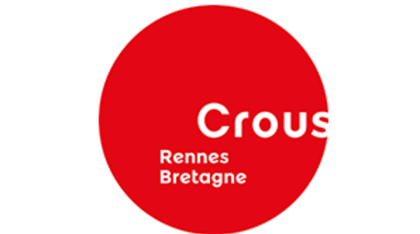

Bienvenue à la page officielle de l'association Si t'es U .
Bienvenue à la page officielle de l'association Si t'es U .
Une association qui étatit créée le 15/10/2015 sous le nom "Si t'es u".
Le nom de cette association vient du mot "Cité U" et qui veut dire cité universitaire.
Le locale de la Si t'es u se trouve dans la cité universitaire de Kergoat, et elle est responsable sur les différentes cités brestoises.
L'association Si t'es u a plusieurs buts, parmi eux, on cite : représenter et défendre les intérêts, tant matériels que moraux, des étudiants résidents en cité universitaire du CLOUS de Brest.
Animer les cités universitaires du CLOUS de Brest par le biais de manifestations diverses gratuites ou payantes, lutter contre l'isolement social des étudiants en Cité Universitaire.
établir un lien entre les résidents des cités universitaires du CLOUS de Brest et les instances du CROUS de Rennes-Bretagne et participer à la vie locale de la ville de Brest.

Liste des cités universitaires brestoises:
| nom de l'association: | Date de création: | Siège de l'association: | RNA: | Type: |
| Si t'es u | 15/10/2015 | 4 rue des Archives 29200 Brest | W291006923 | Education et formation |
Merci d'avoir consulté ma page.